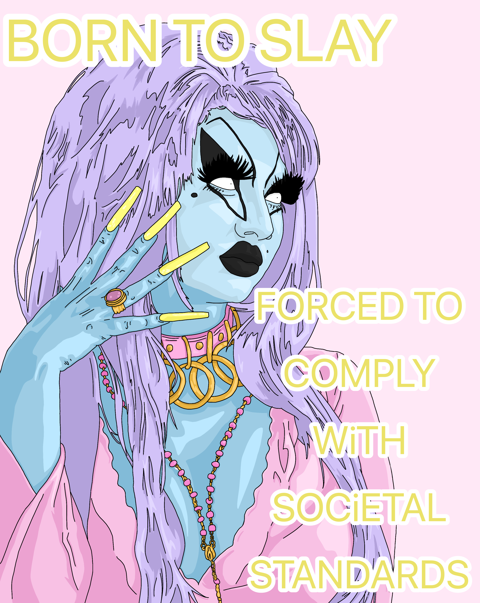

GALERÍA
Descubrí mi arte digital a través de una pequeña selección curada de piezas. Desde las reflexiones sobre el cuerpo y la identidad hasta mis caprichos, cada imagen es una ventana a mi visión personal y creativa. Explora piezas en español e inglés.
Español
Inglés


Proceso
Una vista a cómo trabajo: desde las lineas iniciales hasta las últimas sombras. Esta sección muestra parte del caos y la intuición detrás de cada pieza.